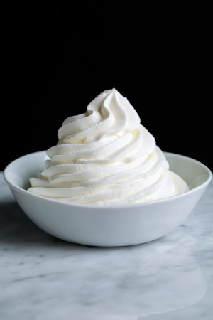

Crêpes Françaises avec Garnitures (French Crepe Buffet)
Original Recipe by Rachael & Original Recipe by Rowena Dumlao-Giardina

Ingredients needed for a Buffet
- Crepes
- Fresh fruits:
- berries (strawberry, raspberry, blueberry, blackberry)
- cherry, banana, thin slices of peaches, etc.
- stewed thin slices of apples and pears
- Fruit Fillings:
- e.g. berry filling, apple cinnamon cream filling
- Berry Coulis
- Raspberries and/or Strawberries Coulis
- Syrups:
- Chocolate Syrup
- Caramel Syrup
- Cream Fillings:
- Whipped cream cheese or Coconut Whipped Cream (dairy-free)
- Chocolate hazelnut spread
- Lemon curd
- Nut Butter cream (almond butter, peanut butter etc.)
- Toppings:
- toasted coconut
- toasted sliced almonds, granola etc.
- Pure Maple Syrup
Crepe Recipe
Dairy-free and Gluten-free

Prep time: 15 minutes || Cook time: 2 minutes || Serving: 4 || Rating 10/10
- 1 cup flour (if gluten-free, use Bob's mill gluten-free pancake mix)
- 1-1/4 cup water
- 2 eggs
- 1 teaspoon honey
- pinch of salt
-
1-1/4 tablespoons olive oil, divided
-
Filling of your choice (optional)
- whipped cream (optional)
- Maple Syrup
Note: This batter can be prepared the day before and allowed to rest in the fridge overnight.
Instructions
- In a blender combine all ingredients.
- Mix well, then let whip for an extra 30-45 seconds.
- Add some butter/oil in a pan, heated over medium heat.
- Pour about 1/4 cup of batter, and quickly tilt pan from side to side in all directions to spread and cover the pan bottom with the batter.
- Cook for approximately 45 seconds, then flip and cook for another 30 seconds.
- Transfer the crepe aside and cook the rest of the batter.
To serve, add some filling in a a line across the crepe along with whipped cream and roll up. Drizzle maple syrup on top.
Fruit Filling Recipes
1. Fruit Filling

Ingredients
- 2 cups fruits of your choice (e.g. wild berries, strawberry, raspberry, blueberry, blackberry, peach, mango)
- sugar (honey or maples), to taste
- 2 tablespoons cornstarch
- lemon juice, to taste
Instructions
- In a small pot, combine the sugar, cornstarch and fruits of choice.
- Cook and stir until mixture comes to a boil. Simmer 1 minute.
- Stir in the lemon juice.
2. Apple Cinnamon Filling

Ingredients
- 3 apples, cored and peeled, chopped
- sugar (honey/maple), to taste
- cinnamon, to taste
- lemon juice, to taste
- Dash salt
Optional, for a thicker sauce
- 2 tablespoons cornstarch
- 2 tablespoon of cold water
Instructions
- In a small pot over medium heat, combine and stir to dissolve the sugar, cinnamon, salt and, optionally, cornstarch, and cold water.
- Stir in the apples and lemon juice. Cook and stir often until the apples have softened and liquid has thickened (about 5 minutes).
Berry Coulis
1. Raspberries and/or Strawberries Coulis
Ingredients
Instructions
Cream Filling Recipes
1. Whipped Cream Cheese Recipe
Original Recipe by Erica from The Pioneer Woman

Prep time: 5 minutes || Chill time: 15 minutes || Serving: 8 || Rating 9.5/10
Ingredients
- 8 ounces cream cheese, softened
- 2 tablespoons maple syrup, icing or cane sugar, adjust to taste
- 2 cups whipping cream
- 1/4 teaspoon vanilla extract
Instructions
- Place the cream cheese and sugar in a large bowl. Beat until completely smooth. Scrape down the sides of the bowl.
- Pour the heavy cream into the cheese mixture. Beat until completely smooth. Scrape down the sides of the bowl.
- Add vanilla and beat until smooth. Store in the refrigerator until ready to use.
- Note: If you want the cream cheese whipped cream to be soft, take out of the refrigerator for about 15 minutes and give it a good whisk before serving.
Notes: - Makes enough to frost a layer cake made with two 6-inch layers.
2. Dairy-free Whipped Cream Recipes
1) Coconut Whipped Cream
From the Fuss-Free Vegan Cookbook

Prep time: 5 minutes + overnight pre-chill of coconut milk || Serving: 1 1/4 cups || Rating X/10
Ingredients
- 1 can coconut cream (or premium coconut milk)
- 2 tablespoons icing sugar
- 1 teaspoon vanilla
- 1-4 tablespoons non-dairy milk (as required to achieve desired consistency)
Instructions
- Chill coconut milk overnight in fridge.
- Scoop coconut cream, as well as icing sugar, and vanilla into bowl of mixer.
- Beat until light and fluffy, adding milk as required.
- Store in an air-tight container in the fridge for up to one week.
2) Cashew-based Vegan Heavy Cream
From the Fuss-Free Vegan Cookbook
Prep time: 5 minutes || Serving: 2 cups || Rating 9/10
Ingredients
- 1 cup soaked, raw cashews
- 1 cup water
- 2 tsp maple syrup
- 1 tsp vanilla extract
Instructions
- Place all ingredients in a food processor and blend (for about 5-7 minutes) until it reaches the desired consistency. Add additional water as needed.
- Store in an air-tight container in the fridge for 1 week, or freeze.
3. Chocolate Hazelnut Spread
Ingredients
- chocolate hazelnut spread (e.g. Nutella)
- milk (e.g. almond milk)
Instructions
- Put the desired amount of chocolate hazelnut spread in a bowl.
- microwave it to soften it.
- Add some milk and mix it well.
- Adjust the consistency of the cream with additional milk if needed.
4. Lemon Curd
Make: 1 cup of lemon curd
Ingredients
- 3/4 cup fresh lemon juice
- 1 tablespoon grated lemon zest
- 3/4 cup sugar
- 3 eggs
- 1/2 cup unsalted butter, cubed
Instructions
- Place strained lemon juice and sugar in a small saucepan. Heat on low and stir until sugar has dissolved.
- Lightly beat egg in a medium bowl.
- Remove lemon syrup from heat and pour SLOWLY into beaten egg while whisking the mixture with a whisk. Continue to whisk by hand for one minute.
- If you pour too fast, the eggs will be scrambled.
- Pour the egg mixture back into the saucepan OVER a strainer. This will get rib of any eggs that may have curdled.
- Add lemon zest, and heat on medium-low until it thickens (about two minutes).
- Thick enough to hold the marks from the whisk.
- Remove the curd from the heat. and add the butter a little at a time, stirring to help it melt.
- Transfer to a container and cover (to prevent a skin from forming), then refrigerate.
5. Nut Butter Cream
Ingredients
Instructions